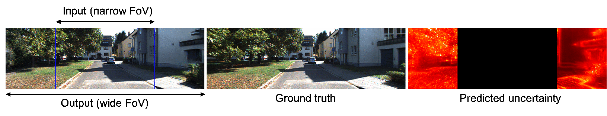
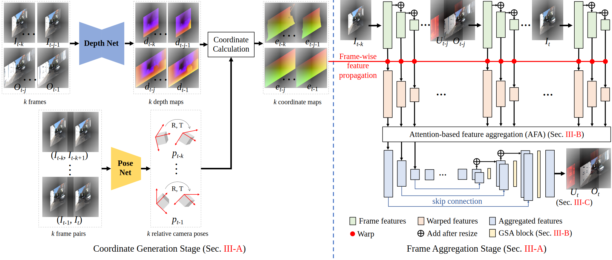
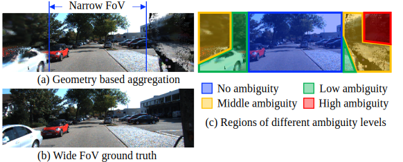
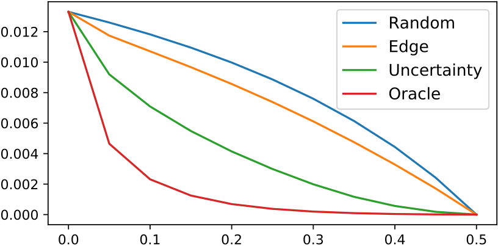
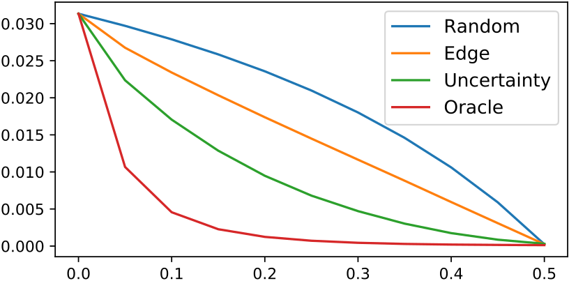

The ability to make educated predictions about their surroundings, and associate them with certain confidence, is important for intelligent systems, like autonomous vehicles and robots. It allows them to plan early and decide accordingly. Motivated by this observation, in this paper we utilize information from a video sequence with a narrow field-of-view to infer the scene at a wider field-of-view. To this end, we propose a temporally consistent field-of-view extrapolation framework, namely FoV-Net, that: (1) leverages 3D information to propagate the observed scene parts from past frames; (2) aggregates the propagated multi-frame information using an attention-based feature aggregation module and a gated self-attention module, simultaneously hallucinating any unobserved scene parts; and (3) assigns an interpretable uncertainty value at each pixel. Extensive experiments show that FoV-Net does not only extrapolate the temporally consistent wide field-of-view scene better than existing alternatives, but also provides the associated uncertainty which may benefit critical decision-making downstream applications.

Framework
The proposed FoV-Net framework. Left: the coordinate generation stage, which estimates the scene-level rigid flow, governed by the camera motion, and uses it to calculate the coordinates (i.e., pixel displacements). Right: the frame aggregation stage, which utilizes the generated coordinates to propagate past frames information on a multi-scale feature level -- denoted as red dots -- and then aggregates the propagated features with an Attention-based Feature Aggregation module. To synthesize the final result Ot, a U-Net architecture is adopted to in/out-paint the missing regions, where a Gated Self-Attention module is introduced to handle different ambiguities for better generation quality. Concurrently, an uncertainty map Ut is jointly estimated to interpret the hallucination uncertainty at each pixel and guide the learning by reducing supervision ambiguity. Due to FoV-Net's recurrent nature, note that previous outputs become future inputs for temporal coherency purposes.

Ambiguity illustration
There is ambiguity existing between the narrow FoV observations and the wide FoV ground truth. The ambiguity mainly comes from two sources: the unobserved information and possible 3D estimation errors. In particular, the pixels in the wide FoV frame can be roughly divided into four types: (a) the observed narrow FoV pixels in the present frame (no ambiguity); (b) the propagated pixels from past frames with accurate propagation (low ambiguity); (c) the propagated pixels from past frames with noisy propagation (medium ambiguity); (d) the unobserved regions (high ambiguity). When the ambiguity is high, strong enforcement of reconstruction losses in those pixels may mislead the training process. In contrast, perceptual and adversarial losses can be more suitable to predict a plausible outcome.

Result Video.
Uncertainty comparisons


The sparsification plots. The x-axis denotes the fraction of removed pixels, and the y-axis shows the MSE on the remaining pixels. MSE converges to 0 after removing all pixels in the out-of-view regions.
References:
[1] Godard, C., et al. Digging into self-supervised monocular depth estimation. In ICCV, 2019.
[2] Zhao, H., et al. Exploring Self-attention for Image Recognition In CVPR, 2020.
[3] Poggi, M., et al. On the uncertainty of self-supervised monocular depth estimation. In CVPR, 2020.